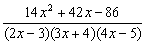
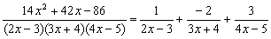
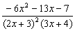
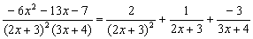
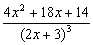
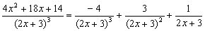
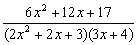
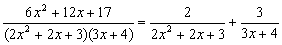

部分分式(III)
最新更新日期: 2011年6月16日
這個程式與部分分式(II)不同的是沒有預設某些係數為1，可以分解一個多項式分式為部 分分式(Partial Fraction)，其中分子為是二次多項式 Ax2 + Bx + C，而分母為三次多項式，可以是 (ax + b)(cx + d)(ex + f) 或 (ax2 + bx + c)(dx + e)，其中 A, B, C, a, b, c, d, e, f 均為實數。
程式需要在 REG Lin 模式下執行，因此在選擇新程式位置後，按 5 1 選用REG Lin模式。
注意: 藍色的英文字為統計模式中的變數(Σx 按 Shift 1 2，Σy 按 Shift 1 → 2)。
程式 (325 bytes)
ClrStat: ?→M: ?→A: ?→B: ?→C: ?→D: ?→X: M => Goto 0:
AD→Y: A , D DT: B┘A→A: C┘Σx→B: Goto 1: Lbl 0: MBD→Y:
B , D DT: A┘M→A: C┘B→B: Lbl 1: X┘D→C: ?→D: D┘Y→D:
?→X: X┘Y→X: Y: ?→Y: Y┘Ans→Y: M => Goto 2: (Y - CX + DC2)
┘(B - CA + C2→M: Σx(D - M◢ ΣxX - ΣxAM - AnsC◢ ΣyM◢ Lbl 2:
A - B => Goto 3: C - A => Goto 4: M3(Y - AX + DA2◢
M2(X - 2AD◢ MD◢ Lbl 3: M(Y - AX + DA2)┘(Ans(A - C◢
Σx(Y - BX + DB2)┘((B - A)(B - C◢ Σy(Y - CX + DC2)┘((C - A)(C - B◢
Lbl 4: M2(Y - AX + DA2)┘Ans◢ M(D - (Y - CX + DC2)┘(C - A)2◢
Σy(D - Ans┘M
注意: 程式以降冪的原則輸入係數，答案出現的分子係數與輸入分母的因子次序一致，若果分母輸入係數相同，答案則以分母的冪降冪出現。
例題1: 將下列分式代為部分分式

按 Prog 1 再按
2 EXE - 3 EXE 3 EXE 4 EXE 4 EXE - 5 EXE
(先輸入分母係數，因為分母為三次，冪數較高)
14 EXE 42 EXE - 86 EXE (分子係數，顯示第一項分式的分子為1)
EXE (顯示第二項分式的分子為 - 2)
EXE (顯示第三項分式的分子為 3)
計算完結後按 AC 終止程式
所以答案為:

例題2: 將下列分式代為部分分式

按 Prog 1 再按
2 EXE 3 EXE 2 EXE 3 EXE 3 EXE 4 EXE
(分母因子係數，按降冪排列所以先輸入二次項，所以輸入兩次2及3)
- 6 EXE - 13 EXE - 7 EXE (分子係數，顯示分母(2x+3)2分母的分子為 2)
EXE (顯示分母(2x+3)的分子為 1)
EXE (顯示第三項分式的分子為 - 3)
所以答案為:

例題3: 將下列分式代為部分分式

按 Prog 1 再按
2 EXE 3 EXE 2 EXE 3 EXE 2 EXE 3 EXE(先輸入分母因子的係數)
4 EXE 18 EXE 14 EXE (分子係數，顯示分母(2x+3)3的分子為 - 4)
EXE (顯示分母(2x+3)2的分子為3)
EXE (顯示分母(2x+3)的分子為 1)
計算完結後按 AC 終止程式
所以答案為:

例題4: 將下列分式代為部分分式

按 Prog 1 再按 0 EXE (注意: 0表示分母不可以完全分解與部分分式(II)不同)
2 EXE 2 EXE 3 EXE 3 EXE 4 EXE
(輸入分母因子係數，按降冪所以先輸入二次項係數)
6 EXE 12 EXE 17 EXE (分子係數，顯示二次分母的分子x係數為 0)
EXE (顯示二次分母的分子常數項為 2)
EXE (顯示一次分母的分子為 3)
計算完結後按 AC 終止程式
所以答案為:

返回 CASIO fx-50FH、fx-3650P II、fx-50FH II及fx-50F PLUS 程式集
程式舊版
程式需要在 SD 模式下執行，因此在選擇新程式位置後，按 4 選用SD模式。
注意: 藍色的英文字為統計模式中的變數(n 按 shift 1 3 ，x為平均x 按 shift 2 1)
程式 (325 bytes)
ClrStat: ?→M: ?→A: ?→B: ?→C: ?→D: ?→X: M => Goto 0:
AD→Y: A ; D DT: B┘A→A: C┘x→B: Goto 1: Lbl 0: MBD→Y:
B ; D DT: A┘M→A: C┘B→B: Lbl 1: X┘D→C: ?→D: D┘Y→D:
?→X: X┘Y→X: Y: ?→Y: Y┘Ans→Y: M => Goto 2: (Y - CX + DC2)
┘(B - CA + C2→M: x(D - M◢ xX - xAM - AnsC◢ nM◢ Lbl 2:
A - B => Goto 3: C - A => Goto 4: M3(Y - AX + DA2◢
M2(X - 2AD◢ MD◢ Lbl 3: M(Y - AX + DA2)┘(Ans(A - C◢
x(Y - BX + DB2)┘((B - A)(B - C◢ n(Y - CX + DC2)┘((C - A)(C - B◢
Lbl 4: M2(Y - AX + DA2)┘Ans◢ M(D - (Y - CX + DC2)┘(C - A)2◢
n(D - Ans┘M
注意: 程式以降冪的原則輸入係數，答案出現的分子係數與輸入分母的因子次序一致，若果分母輸入係數相同，答案則以分母的冪降冪出現。